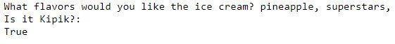
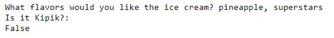

שלום לכולם,
די הצלחתי בתרגיל, אני מקבל false כשמדובר בטעם בודד (גם אם זה superstars,) ומקבל True כשמדובר בsuperstars, עם עוד טעם, בין אם הוא בהמשך המחרוזת או בהתחלה.
כמובן שישנה בעיה קטנה, במידה ואני ארשום superstars, ללא הפסיק, הוא ישיב לי False.
האם דרוש שזה יציג True גם אם superstars נמצא בסוף ללא פסיק?
הכוונה נניח לזה:
pineapple, creme-brulee, superstars
או שזה בסדר לתרגיל הזה שסוף ההזמנה תסתיים עם פסיק?
pineapple, creme-brulee, superstars,
מקווה שרשמתי ברור, הראש שלי כבר מעלה עשן מנסיון למצוא פתרון לזה,
כי כפי שראיתי בפוסטים אחרים, אפשר יהיה לגרום לזה להציג שגוי אם לדוגמא יש superstars premium או עם כל תו נוסף.
תודה
לייק 1
om3riko
באיזה אופרטור השתמשתה?
בשבילי in פתר הרבה מאוד בעיות.
DannyMX
גם השתמשתי באופרטור in, אבל זה לא פותר את הבעייה במידה וsuperstars, רשום ללא הפסיק בסוף
guyfront
תשתמש גם באופרטור or כדי לשים עוד אפשרויות לתנאים שיכולים להיווצר
om3riko
הקוד שאני כתבתי יצא לי 5 שורות
השתמשתי גם בin וב and באותו שורה
והשתמשתי בסה"כ ב3 משתנים.
אני מקווה שזה עוזר קצת
DannyMX
השאלה היא רק לגבי הפסיק בסוף.
אם יש צורך גם שsuperstars יחזיק True ללא פסיק בסוף זה מוביל לכך שכל תו שיבוא אחרי superstars יחשב כTrue.
ופה הבעיה, כל עוד superstars, נרשם בצורה הזאת אין לי שום בעיה בקוד.
בצורה קצת יותר פשוטה וברורה, האם גם השני חייב להראות True על פי הדרישות?
 
om3riko
הבנתי,
בעיקרון שניהם המקרים אמורים להציג True
האם אתה יכול להראות את כל הקוד שלך?
DannyMX
אין לי בעיה להפוך את השני לTrue
הבעיה היא שבשני זה משאיר דלת פתוחה לבעיות,
נניח וארשום
pineapple, superstars cherry
זה עדיין יחשב בתור True.
om3riko
אני חושב שהבנתי מה אתה מתכוון.
בו נגיד שאתה סתם מסבך את העניין, אנחנו שבוע ראשון. @Yam אני בטוח שיש פקודה או אופרטור שעדיין לא למדנו שנותן לך לבחור משהו בבלעדיות.
האופרטור in הוא מאוד פשטני פשוט מחפש מחרוזת בתוך מחרוזת.
תחכה לשבועות הבאים על מנת לסבך את הדברים.
ori81510
מסכים, ומקרה כזה שאין פסיק בין שני טעמים אינו אפשרי לפי הנתון (“אם הלקוח ירצה יותר מטעם אחד, הוא יפריד את הטעמים בפסיק”)
aosherel
לגבי טעם בודד ניתן לפתור את זה עם תוספת קטנה לקוד או הגדרה שונה לשימוש בתוכנה
לגבי תוספת התווים מצאתי פתרון ארוך מאוד (מאוד מאוד), שהעדפתי לוותר עליו
יכול להיות שיש גם פתרון אחר שעדיין לא הגעתי אילו
aosherel
נראה לי שמצאתי פתרון שמונע תשובות שגויות במקרה של שם טעם דומה עם תוספת בהתחלה או בסוף שם הטעם, השתמשתי בשורת קוד נוספת שמבצעת מניפולציה כלשהי, אוכל לדעת אם היא תקינה רק לאחר בדיקת התשובות